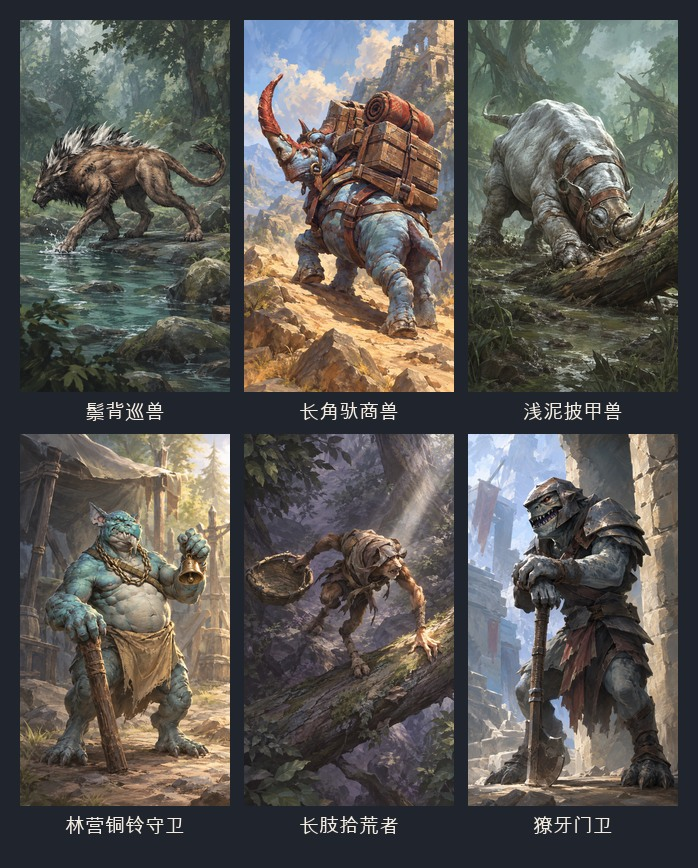

鬃背巡兽

镜头平视侧面跨过浅溪，右前爪刚落水
用光阴天柔光与水面冷反光
主色青绿溪水、黑褐皮毛、白鬃
生成描述
为yf-artifact画一张Dota世界观普通单位卡图，工作名「鬃背巡兽」。以第一张漫画局部的长白鬃、深额头、长尾与四足为基础发展普通单位。画面动作为平视侧面跨过浅溪，右前爪刚落水。全幅主色为青绿溪水、黑褐皮毛、白鬃。用光为阴天柔光与水面冷反光。角色体态和器物构成清楚的大轮廓，场景与构图独立设计，少量生活磨损集中在触地处和器物握持处。
已完成 6 张，Migoo Flare，768×1360。参考来自《Are We Heroes Yet?》和《最后的城堡》。每张按角色参考、成图和48像素小卡对照，点图可打开原图。

镜头平视侧面跨过浅溪，右前爪刚落水
用光阴天柔光与水面冷反光
主色青绿溪水、黑褐皮毛、白鬃
为yf-artifact画一张Dota世界观普通单位卡图，工作名「鬃背巡兽」。以第一张漫画局部的长白鬃、深额头、长尾与四足为基础发展普通单位。画面动作为平视侧面跨过浅溪，右前爪刚落水。全幅主色为青绿溪水、黑褐皮毛、白鬃。用光为阴天柔光与水面冷反光。角色体态和器物构成清楚的大轮廓，场景与构图独立设计，少量生活磨损集中在触地处和器物握持处。
镜头后侧三分之四缓步上坡，侧头看向来路，背两只木货箱与卷毯
用光正午顶光、箱底短硬阴影
主色青蓝皮、赭红角、米黄沙路
为yf-artifact画一张Dota世界观普通单位卡图，工作名「长角驮商兽」。以第一张漫画局部的青蓝短粗四足、深红骨质角、钝口吻为基础发展普通单位。画面动作为后侧三分之四缓步上坡，侧头看向来路，背两只木货箱与卷毯。全幅主色为青蓝皮、赭红角、米黄沙路。用光为正午顶光、箱底短硬阴影。角色体态和器物构成清楚的大轮廓，场景与构图独立设计，少量生活磨损集中在触地处和器物握持处。
镜头近地三分之四俯身顶开一段倒木，四脚踩在湿泥上
用光雨后冷散射光，背脊宽亮面，腹下整块软暗
主色灰白厚皮、墨绿湿地、旧铜护具
为yf-artifact画一张Dota世界观普通单位卡图，工作名「浅泥披甲兽」。以第一张漫画局部的灰白厚皮、宽背、低头、长鼻角与朴素护鼻片为基础发展普通单位。画面动作为近地三分之四俯身顶开一段倒木，四脚踩在湿泥上。全幅主色为灰白厚皮、墨绿湿地、旧铜护具。用光为雨后冷散射光，背脊宽亮面，腹下整块软暗。角色体态和器物构成清楚的大轮廓，场景与构图独立设计，少量生活磨损集中在触地处和器物握持处。
镜头正面偏侧站起，一手摇小铜铃，一手扶住粗短木棒
用光清晨右侧暖日光，营棚左侧冷灰暗面
主色蓝绿皮、浅褐围布、亮灰营地
为yf-artifact画一张Dota世界观普通单位卡图，工作名「林营铜铃守卫」。以第一张漫画局部的青蓝皮肤、宽口、大腹、粗臂、低阶营地居民为基础发展普通单位。画面动作为正面偏侧站起，一手摇小铜铃，一手扶住粗短木棒。全幅主色为蓝绿皮、浅褐围布、亮灰营地。用光为清晨右侧暖日光，营棚左侧冷灰暗面。角色体态和器物构成清楚的大轮廓，场景与构图独立设计，少量生活磨损集中在触地处和器物握持处。
镜头高位俯看跨过斜倒树干，一手拖一只扁藤筐，一手撑木头
用光林隙一小束斜白光照手和筐沿，其他保留浅冷阴影
主色赭褐毛、苔灰木、浅紫阴地
为yf-artifact画一张Dota世界观普通单位卡图，工作名「长肢拾荒者」。以第一张漫画局部的瘦长非人体态、褐色毛皮、弯腿、前倾长臂为基础发展普通单位。画面动作为高位俯看跨过斜倒树干，一手拖一只扁藤筐，一手撑木头。全幅主色为赭褐毛、苔灰木、浅紫阴地。用光为林隙一小束斜白光照手和筐沿，其他保留浅冷阴影。角色体态和器物构成清楚的大轮廓，场景与构图独立设计，少量生活磨损集中在触地处和器物握持处。保持参考中非人的长脸、弯腿与低伏体态，四肢比例夸张，面部具有兽形口吻。
镜头略低机位侧视守在窄石门，双手拄一把钝头短戟，肩膀略缩
用光门外明亮冷天光，头盔下短而清楚的阴影
主色灰蓝皮、哑铁、浅米色石墙
为yf-artifact画一张Dota世界观普通单位卡图，工作名「獠牙门卫」。以第一张漫画局部的蓝灰面部、突出的獠牙、窄额、旧包颊头盔为基础发展普通单位。画面动作为略低机位侧视守在窄石门，双手拄一把钝头短戟，肩膀略缩。全幅主色为灰蓝皮、哑铁、浅米色石墙。用光为门外明亮冷天光，头盔下短而清楚的阴影。角色体态和器物构成清楚的大轮廓，场景与构图独立设计，少量生活磨损集中在触地处和器物握持处。